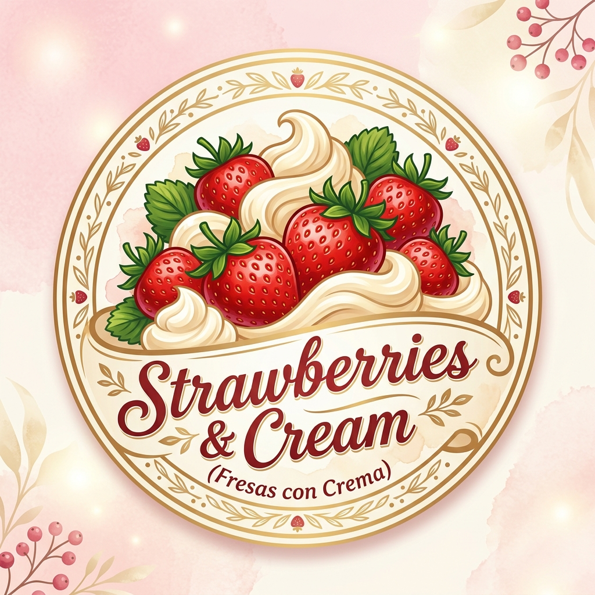

Concepto innovador, propuesta gastronómica y equipo emprendedor.
Descripción General: "Sweet Delight" es un emprendimiento formal enfocado en la elaboración y comercialización de postres artesanales premium basados en fresas frescas seleccionadas del campo, acompañadas de crema chantilly especial receta de la casa, crema deslactosada light y una variedad de toppings personalizados (chocolates belgas, galletas Oreo, frutos secos y leches condensadas aromatizadas).
Cargo Principal: Gerente General y Representante Legal (Dirección Administrativa y Financiera)
Responsable de la planeación estratégica, compras a proveedores, control de costos, precios, cumplimiento tributario y flujo de caja.
Cargo Principal: Gerente de Operaciones y Calidad (Representante Legal Suplente)
Responsable del protocolo de selección y desinfección de fruta, batido de cremas, control de porciones, higiene BPM y atención de servicio.

Diseño moderno, armónico e higiénico que resalta la frescura del fruto natural y la textura cremosa del postre, utilizando tonalidades rojas (frescura, pasión y apetito) y cremas suaves (suavidad, dulzura y distinción).
Estructura organizativa, capital humano, recursos tecnológicos y presupuesto inicial.
Estructura jerárquica clara con delimitación de responsabilidades para garantizar la eficiencia operativa y comercial:
| Concepto / Rubro | Descripción Detallada | Costo COP | Costo USD |
|---|---|---|---|
| Maquinaria y Equipos de Frío | Batidora industrial planetaria, vitrina refrigerada expositora, conservador | $2.600.000 | $650.00 |
| Insumos e Ingredientes de Apertura | Fresas (60 kg), cremas chantilly, leches condensadas, toppings surtidos | $800.000 | $200.00 |
| Empaques y Publicidad Inicial | Vasos personalizados biodegradables, pendón exterior, volantes de apertura | $400.000 | $100.00 |
| Capital de Trabajo / Fondo de Reserva | Reserva de liquidez primer mes (garantía de arriendo y servicios) | $1.200.000 | $300.00 |
| TOTAL INVERSIÓN INICIAL REQUERIDA | $5.000.000 COP | $1,250.00 USD | |
Visualizador interactivo de los 9 bloques del modelo Canvas.
Análisis técnico de costos fijos, costos variables, precios y rentabilidad mensual base (2.000 unidades).
| Concepto Contable | Cómo se Obtiene / Fórmula | Valor en Pesos (COP) | Valor en Dólares (USD) | % s/Ventas |
|---|---|---|---|---|
| (+) Ingresos Operacionales | Ventas del período (2.000 vasos × $10.000) | $20.000.000 | $5.000.00 | 100.0% |
| (–) Costo de Ventas | Costo de lo vendido (2.000 vasos × $3.600 CVU) | -$7.200.000 | -$1.800.00 | 36.0% |
| (=) Utilidad Bruta | Ingresos - Costo de Ventas | $12.800.000 | $3.200.00 | 64.0% |
| (–) Gastos Operacionales de Administración | Costos fijos (Arriendo, nóminas, servicios, software) | -$4.300.000 | -$1.075.00 | 21.5% |
| (–) Gastos Operacionales de Ventas (Publicidad) | Inversión en pauta TikTok, Meta, volantes y BTL | -$600.000 | -$150.00 | 3.0% |
| (=) Utilidad Operacional | Utilidad Bruta - Gastos Operacionales | $7.900.000 | $1.975.00 | 39.5% |
| (+/–) No Operacionales (Gastos bancarios) | Comisiones de datáfono y pasarela digital | -$150.000 | -$37.50 | 0.75% |
| (=) Utilidad Antes de Impuestos | Utilidad Operacional ± No Operacionales | $7.750.000 | $1.937.50 | 38.75% |
| (–) Impuesto de Renta Estimado (35%) | Provisión fiscal societaria | -$2.712.500 | -$678.13 | 13.56% |
| (=) UTILIDAD NETA (RESULTADO FINAL DEL PERÍODO) | Ganancia líquida libre para socios | $5.037.500 COP | $1,259.38 USD | 25.19% |
Estructura diversificada de monetización y proyección financiera mes a mes con estacionalidad de la demanda.
Línea principal en 3 presentaciones:
Ventas cruzadas de alto margen:
Servicio B2B y celebraciones:
La proyección incorpora la curva de aprendizaje inicial, el incremento gradual de clientes y los picos estacionales del mercado gastronómico (San Valentín en Feb, Día de la Madre en Mayo, Amor y Amistad en Sep, y Temporada Navideña en Dic):
| Mes | Evento / Hito Comercial | Vasos Vendidos | Ingresos Postres (COP) | Otros Ingresos (Bebidas/Eventos) | Total Facturado (COP) | Costo Variable (36%) | Gastos Fijos + Mkt | Utilidad Neta (COP) |
|---|---|---|---|---|---|---|---|---|
| Mes 1 (Ene) | Apertura & Marcha Blanca | 1.400 | $14.000.000 | $800.000 | $14.800.000 | -$5.328.000 | -$4.900.000 | $2.971.800 |
| Mes 2 (Feb) | San Valentín / Amor | 2.100 | $21.000.000 | $1.800.000 | $22.800.000 | -$8.208.000 | -$4.900.000 | $6.195.800 |
| Mes 3 (Mar) | Consolidación Local | 1.800 | $18.000.000 | $1.200.000 | $19.200.000 | -$6.912.000 | -$4.900.000 | $4.737.800 |
| Mes 4 (Abr) | Día del Niño & Vacaciones | 1.950 | $19.500.000 | $1.400.000 | $20.900.000 | -$7.524.000 | -$4.900.000 | $5.444.400 |
| Mes 5 (May) | Día de la Madre (Pico Alto) | 2.600 | $26.000.000 | $2.500.000 | $28.500.000 | -$10.260.000 | -$5.100.000 | $8.411.000 |
| Mes 6 (Jun) | Vacaciones Escolares / Mitad de Año | 2.200 | $22.000.000 | $1.900.000 | $23.900.000 | -$8.604.000 | -$4.900.000 | $6.627.400 |
| Mes 7 (Jul) | Temporada Alta Vacacional | 2.300 | $23.000.000 | $1.800.000 | $24.800.000 | -$8.928.000 | -$4.900.000 | $6.999.200 |
| Mes 8 (Ago) | Fidelización & Sweet Club | 2.100 | $21.000.000 | $1.600.000 | $22.600.000 | -$8.136.000 | -$4.900.000 | $6.151.600 |
| Mes 9 (Sep) | Amor y Amistad (Pico Alto) | 2.700 | $27.000.000 | $2.600.000 | $29.600.000 | -$10.656.000 | -$5.100.000 | $8.803.600 |
| Mes 10 (Oct) | Halloween & FresaFest | 2.250 | $22.500.000 | $1.900.000 | $24.400.000 | -$8.784.000 | -$4.900.000 | $6.806.800 |
| Mes 11 (Nov) | Black Friday & Pre-Navidad | 2.350 | $23.500.000 | $2.100.000 | $25.600.000 | -$9.216.000 | -$4.900.000 | $7.324.400 |
| Mes 12 (Dic) | Navidad & Fin de Año (Pico Máximo) | 3.200 | $32.000.000 | $3.800.000 | $35.800.000 | -$12.888.000 | -$5.400.000 | $11.082.800 |
| TOTAL AÑO 1 CONSOLIDADO | 26.950 vasos | $269.500.000 | $23.800.000 | $293.300.000 COP | -$105.480.000 | -$59.700.000 | $79.456.800 COP | |
Pilares operativos y red de alianzas estratégicas para asegurar la excelencia del producto.
Recepción diaria matutina de fresa fresca seleccionada (calibre grande, maduración óptima 90%). Lavado con agua ozonizada, desinfección mediante inmersión en solución inocua y almacenamiento en refrigeración estricta entre 2°C y 4°C para conservar turgencia y nutrientes.
Batido industrial diario de la crema chantilly artesanal y crema especial bajo parámetros exactos de tiempo, temperatura y aireación. Porcionado milimétrico con báscula digital (120g de fresa en vaso de 12 oz, 60ml de crema y 30g de toppings).
Aplicación rigurosa de Buenas Prácticas de Manufactura (BPM), control de lotes con sistema PEPS (Primeras Entradas, Primeras Salidas), monitoreo de mermas (meta menor al 3%) y uso obligatorio de indumentaria sanitaria (gorro, tapabocas, guantes y delantal).
Producción continua de contenido multimedia para TikTok e Instagram (videos de preparación, tendencias de audio, reacciones de clientes), atención inmediata y amable por WhatsApp Business y despacho en empaques biodegradables estéticos.
Cierre diario de caja en software POS en la nube, conciliación de pagos electrónicos (Nequi/Daviplata/Datafono), pago puntual a proveedores locales, provisión de impuestos y liquidación mensual de rentabilidad.
Asociaciones agrícolas locales (Sibaté / Facatativá). Alianza directa sin intermediarios garantizando precio estable por kilo y fruta de primera calidad cosechada el mismo día.
Proveedores de crema de leche con 35% de tenor graso, leche condensada y quesos dulces (Colanta, Alpina, Alquería). Descuento comercial del 12% por volumen de compra mensual.
Fabricantes de vasos de PLA (ácido poliláctico a base de maíz), tapas domo y cucharas de bambú personalizadas con tintas vegetales ecológicas.
Integración con Rappi, Didi Food y red de mensajeros urbanos de confianza para despachos rápidos en un radio de 5 km manteniendo la temperatura del producto.
"Foodies" locales de Instagram y TikTok con audiencias de 10k a 50k seguidores. Acuerdos de degustación y canje para reseñas honestas y difusión viral.
Convenios con colegios, universidades y empresas cercanas para ofrecer descuentos por carnet estudiantil y servicio de mesas dulces para eventos de fin de año.
Cómo conectamos con el cliente, ciclo de compra y plan integral de posicionamiento de marca.
📍 1. Conciencia: Anuncio en TikTok o vitrina física llamativa.
🔍 2. Evaluación: Consulta del menú por código QR o historias de Instagram.
💳 3. Compra: Pago rápido por Nequi, Daviplata, efectivo o datáfono.
🍓 4. Entrega: Entrega inmediata en mostrador o delivery en menos de 30 min.
⭐ 5. Postventa: Registro en Sweet Club y solicitud de calificación con cupón.
Ruta legal paso a paso para la formalización empresarial y fundamentación societaria.
La empresa se constituye bajo la forma jurídica de Sociedad por Acciones Simplificada (S.A.S.) bajo la denominación comercial "SWEET DELIGHT S.A.S.". Esta tipología societaria es la más moderna, versátil y recomendada para emprendimientos en Colombia y Latinoamérica debido a los siguientes fundamentos técnicos y legales:
Los socios fundadores responden única y exclusivamente hasta por el monto de sus aportes de capital, protegiendo su patrimonio personal frente a cualquier contingencia operativa o comercial.
No requiere el elevado costo de una escritura pública notarial (salvo que se aporten bienes inmuebles), lo cual reduce significativamente los gastos de formalización inicial.
No exige una Junta Directiva obligatoria ni Revisor Fiscal inicial (mientras no se superen topes de activos/ingresos), simplificando la toma de decisiones ágiles entre los socios.
| Criterio de Clasificación | Tipo Asignado | Justificación Técnica / Legal |
|---|---|---|
| Por su Actividad Económica | Sector Terciario / Servicios & Alimentos | Elaboración y comercialización de postres preparados (Código CIIU 5619). |
| Por su Tamaño Empresarial | Microempresa | Menos de 10 trabajadores y activos acordes a la Ley 590 de 2000 y Decreto 957 de 2019. |
| Por la Procedencia del Capital | Empresa Privada Nacional | El 100% de los recursos iniciales ($5.000.000 COP) son de origen privado propio de los socios. |
| Por su Ámbito Territorial | Local con Proyección Regional | Inicio en sede local con modelo escalable para franquicias y múltiples puntos. |
Verificación en la plataforma RUES (Registro Único Empresarial y Social) y en la Superintendencia de Industria y Comercio (SIC) de que el nombre "Sweet Delight S.A.S." y la marca gráfica estén disponibles y no tengan conflictos de derechos previos.
Elaboración del acta de constitución y estatutos privados suscritos por los dos accionistas fundadores, definiendo objeto social, capital, órganos de administración y facultades del Representante Legal.
Diligenciamiento virtual del formulario de Pre-RUT en el portal de la DIAN bajo la casilla "Para trámite en Cámara de Comercio", registrando la actividad económica CIIU 5619 (Expendio de comidas preparadas en cafeterías/postres).
Radicación presencial o virtual de los estatutos, formularios RUES, copias de cédulas y Pre-RUT. Pago de los derechos de matrícula de la sociedad y del establecimiento comercial para obtener el Certificado de Existencia y Representación Legal.
La DIAN asigna el Número de Identificación Tributaria (NIT) oficial a la sociedad y expide el RUT definitivo con las responsabilidades tributarias aplicables (IVA, Retención en la fuente, Régimen Simple o Ordinario).
Apertura de la cuenta corriente o de ahorros empresarial a nombre de Sweet Delight S.A.S. para el manejo transparente del flujo de caja, pasarelas de pago digitales (Nequi, Daviplata) y transacciones comerciales.
Gestión de requisitos obligatorios para operar: Concepto Sanitario y Carnets de Manipulación de Alimentos (Secretaría de Salud), Certificado de Seguridad y Extintores (Bomberos), Uso del Suelo compatible (Planeación Municipal) y paz y salvo de derechos de autor (Sayco & Acinpro).
Inscripción de la sociedad como empleador ante EPS, ARL (Riesgo 1/2), Fondo de Pensiones y Cesantías, y Caja de Compensación Familiar (Compensar/Colsubsidio/Comfama) para afiliar al personal contratado.
Documento privado formal de constitución societaria conforme a la Ley 1258 de 2008.
En la ciudad de Bogotá D.C., República de Colombia, a los veinticinco (25) días del mes de agosto de 2026, comparecen los señores:
Quienes manifestaron su voluntad libre y espontánea de constituir una SOCIEDAD POR ACCIONES SIMPLIFICADA (S.A.S.), la cual se regirá por las disposiciones de la Ley 1258 de 2008, el Código de Comercio de Colombia y los siguientes estatutos:
ARTÍCULO 1. RAZÓN SOCIAL: La sociedad se denominará "SWEET DELIGHT S.A.S.", sociedad comercial de naturaleza por acciones simplificada.
ARTÍCULO 2. DOMICILIO: El domicilio principal de la sociedad será la ciudad de Bogotá D.C., República de Colombia. La sociedad podrá establecer sucursales, agencias o puntos de venta en cualquier lugar del territorio nacional o en el exterior, por decisión de la Asamblea General de Accionistas.
ARTÍCULO 3. DURACIÓN: El término de duración de la sociedad será indefinido, conforme a lo autorizado por el numeral 4 del artículo 5 de la Ley 1258 de 2008.
ARTÍCULO 4. OBJETO SOCIAL: La sociedad tendrá como objeto principal el desarrollo de las siguientes actividades:
ARTÍCULO 5. CAPITAL AUTORIZADO: El capital autorizado de la sociedad es de DIEZ MILLONES DE PESOS MONEDA CORRIENTE ($10.000.000 COP), dividido en diez mil (10.000) acciones ordinarias de valor nominal de mil pesos ($1.000 COP) cada una.
ARTÍCULO 6. CAPITAL SUSCRITO Y PAGADO: A la fecha de constitución, el capital suscrito y pagado en su totalidad en dinero efectivo es de CINCO MILLONES DE PESOS ($5.000.000 COP), representado en cinco mil (5.000) acciones ordinarias, distribuido así:
| Accionista | No. de Acciones | Valor Aporte (COP) | % Participación |
|---|---|---|---|
| Estudiante 1 (C.C. 1.000.000.001) | 2.500 | $2.500.000 | 50.0% |
| Estudiante 2 (C.C. 1.000.000.002) | 2.500 | $2.500.000 | 50.0% |
| TOTAL CAPITAL PAGADO | 5.000 acciones | $5.000.000 COP | 100.0% |
ARTÍCULO 7. ÓRGANOS: La dirección y administración de la sociedad estará a cargo de los siguientes órganos: 1. La Asamblea General de Accionistas; y 2. El Representante Legal (Gerente General). La sociedad prescinde de la creación de Junta Directiva, asumiendo el Representante Legal la totalidad de funciones de administración ordinaria.
ARTÍCULO 8. ASAMBLEA GENERAL DE ACCIONISTAS: Es el máximo órgano de la sociedad, conformado por los accionistas reunidos con el quórum y condiciones fijadas por la ley. Se reunirá ordinariamente una vez al año dentro de los tres primeros meses del año, y extraordinariamente cuando sea convocada.
ARTÍCULO 9. REPRESENTACIÓN LEGAL: La representación legal de la sociedad estará a cargo de un Gerente General, quien tendrá un suplente que lo reemplazará en sus faltas absolutas, temporales o accidentales. El Representante Legal queda investido de las más amplias facultades para ejecutar todos los actos y contratos comprendidos dentro del giro ordinario de los negocios sociales sin límite de cuantía hasta por cincuenta (50) salarios mínimos mensuales vigentes.
Por acuerdo unánime de los accionistas constituyentes, se designan para los cargos de dirección y administración a:
Los designados aceptan los cargos para los cuales fueron nombrados y manifiestan no hallarse incursos en ninguna causal legal de inhabilidad ni incompatibilidad.
ARTÍCULO 10. DISOLUCIÓN: La sociedad se disolverá por las causales previstas en el artículo 34 de la Ley 1258 de 2008 y las normas comerciales aplicables.
ARTÍCULO 11. CLÁUSULA COMPROMISORIA: Todas las diferencias que ocurran a los accionistas entre sí o con la sociedad con motivo del contrato social serán resueltas prioritariamente mediante arreglo directo; en su defecto, serán sometidas a conciliación o arbitramento en el Centro de Arbitraje y Conciliación de la Cámara de Comercio del domicilio principal.
Marco teórico y metodológico universal para diseñar la estrategia empresarial de cualquier organización.
La planeación estratégica es el proceso sistemático mediante el cual una organización define su visión de futuro, analiza su entorno competitivo y establece objetivos, estrategias y planes de acción medibles para alcanzar ventajas competitivas sostenibles:
Evaluación profunda de la situación actual de la empresa. Se compone de:
Establecimiento del ADN y propósito fundamental de la compañía:
Conversión de la visión en metas concretas que cumplan con la metodología SMART (Específicos, Medibles, Alcanzables, Relevantes y con Tiempo límite). Se estructuran habitualmente bajo las 4 perspectivas del Cuadro de Mando Integral (Balanced Scorecard): Financiera, Clientes, Procesos Internos y Aprendizaje/Crecimiento.
Definición de cómo la empresa competirá y ganará en el mercado. Elección de la estrategia genérica de Michael Porter (Liderazgo en Costos, Diferenciación o Enfoque/Nicho), estrategias de crecimiento de Ansoff (Penetración, Desarrollo de Productos o Mercados) y estrategias de innovación (Océano Azul).
Traducción de las estrategias a la realidad cotidiana: definición de proyectos, tareas específicas, asignación de presupuestos, cronogramas de Gantt y matriz RACI de responsables para cada área.
Implementación de tableros de control con Indicadores Clave de Desempeño (KPIs), reuniones periódicas de seguimiento estratégico mensual/trimestral y ajustes tácticos oportunos ante desviaciones del entorno.
Aplicación completa y personalizada de la planeación estratégica para nuestro negocio de postres.
"En Sweet Delight S.A.S. transformamos momentos cotidianos en experiencias dulces e inolvidables, elaborando postres artesanales de fresas con crema de la más alta frescura, inocuidad y personalización gastronómica. Apoyamos al agricultor local mediante compras justas y promovemos la sostenibilidad utilizando empaques 100% biodegradables, brindando a cada cliente una atención cálida, rápida y memorable."
"Para el año 2031, Sweet Delight S.A.S. será reconocida como la marca líder y referente regional en postres artesanales gourmet basados en fresas frescas, consolidando una red de 5 puntos de venta propios y franquiciados, un canal digital de delivery altamente automatizado y un modelo empresarial sostenible con triple impacto: económico, social y ambiental."
Obsesión por la frescura de la fruta y la textura perfecta de la crema.
Uso de empaques biodegradables y cero tolerancia al desperdicio.
Relaciones justas con proveedores campesinos y precios honestos.
Servicio al cliente empático, alegre y siempre dispuesto a sorprender.
Explotar la receta exclusiva y la estética del empaque para lanzar campañas virales en TikTok e impulsar la línea de catering para eventos sociales corporativos.
Aprovechar el auge de pedidos por WhatsApp y domicilios propios para mitigar la limitación física del punto de venta y acelerar el reconocimiento de marca.
Utilizar convenios de precio fijo con cultivadores locales para blindar el margen de costos variables frente a la inflación de materias primas.
Estandarizar al 100% las porciones y mermas mediante báscula y capacitar al equipo en servicio al cliente para diferenciarse de competidores informales.
Incentivos a la formalización de microempresas y programas gubernamentales de apoyo a jóvenes emprendedores y economía popular.
Sector de postres y antojos con demanda inelástica en segmentos de precio accesible ($7k-$10k COP), favoreciendo compras impulsivas de fin de semana.
Hábito arraigado de consumir postres en salidas familiares, celebraciones y momentos de premio personal ("treat culture").
Adopción masiva de billeteras electrónicas (Nequi/Daviplata), cartas QR interactivas y viralización de productos a través de algoritmos de video corto.
Mayor conciencia ciudadana sobre la reducción de plásticos de un solo uso, exigiendo el empleo de empaques biodegradables y compostables.
Exigencia de certificación en manipulación de alimentos (Resolución 2674/2013), rotulado nutricional y registro en Cámara de Comercio.
Ajusta las variables de ventas, precios, costos y publicidad para evaluar en vivo la rentabilidad del emprendimiento.
| (+) Ingresos Operacionales (Ventas Esperadas) | $20.000.000 |
| (–) Costo de Ventas (Materia Prima & Empaques) | -$7.200.000 |
| (=) Utilidad Bruta | $12.800.000 |
| (–) Gastos Fijos de Operación & Administración | -$4.300.000 |
| (–) Gastos de Publicidad y Mercadeo | -$600.000 |
| (=) Utilidad Operacional | $7.900.000 |
| (–) Impuesto de Renta Estimado (35%) | -$2.712.500 |
| (=) UTILIDAD NETA ESTIMADA DEL PERÍODO | $5.037.500 |
Visualizador interactivo de diapositivas oficiales de Sweet Delight S.A.S. con opción de pantalla completa, navegación guiada y descarga directa del archivo PowerPoint original (.pptx).
Investigación aplicada a los procesos empresariales de producción, caso de estudio en la Industria Agroalimentaria (Grupo Bimbo) y convergencia de ciencias transversales.
Este portal y documento contiene todos los requerimientos y módulos solicitados con el más alto rigor técnico, legal, científico y financiero:
Liquidación integral para 15 trabajadores (5 casos especializados + 10 operarios de planta) calculada bajo la legislación laboral colombiana y la plantilla interactiva de HyController Nómina.
• Empleado: Juan Carlos Pérez Gómez (C.C. 1.010.201.001).
• Turno ordinario: 2:00 p.m. a 10:00 p.m. De 2 a 9 p.m. son 7h diurnas; de 9 a 10 p.m. es 1h nocturna ordinaria por día trabajado (30h/mes al 35% = $87.545,25).
• 5 Extras Diurnas (HED 125%): $52.110,27.
• Auxilio de Transporte: $249.095.
• Total Devengado: $2.139.655,52 | Neto: $1.988.410,68.
• Empleado: María Fernanda Rodríguez Silva (C.C. 1.020.302.002).
• Auxilio de Transporte: $0 (Supera 2 SMLMV = $3.501.810).
• Turno: 6:00 a.m. (100% diurno ordinario).
• 4 Horas Extras Diurnas Dominicales (HEDD 200%): Factor 2.0 (75% dominical + 25% extra) = 4 × ($19.047,62 × 2.0) = $152.380,95.
• Total Devengado: $4.152.380,95 | Neto: $3.820.190,48.
• Empleado: Carlos Alberto Martínez López (C.C. 1.030.403.003).
• Auxilio de Transporte: $249.095 (Aplica por devengar menos de 2 SMLMV).
• Turno: 1:00 p.m. a 9:00 p.m. (100% diurno).
• 5 Extras Diurnas Festivas (HEDF 200%): 5 × ($14.285,71 × 2.0) = $142.857,14.
• Total Devengado: $3.391.952,14 | Neto: $3.140.523,57.
• Empleado: Diana Marcela Gómez Castro (C.C. 1.040.504.004).
• ¿Cómo le queda su recargo nocturno?
1. De 8:00 a 9:00 p.m. (1h) es horario diurno (sin recargo).
2. De 9:00 p.m. a 4:00 a.m. son 7 horas nocturnas ordinarias diarias (Art. 160 CST).
3. Recargo por hora (35%): $11.904,76 × 35% = $4.166,67.
4. Total mes (30 días × 7h = 210h): $875.000,00 *(o $765.625 con div. 240)*.
• Total Devengado: $3.624.095,00 | Neto: $3.354.095,00.
• Empleado: Andrés Felipe Morales Vargas (C.C. 1.050.605.005).
• Turno: 7:00 p.m. a 3:00 a.m. De 7 a 9 p.m. diurnas (2h). De 9 p.m. a 3 a.m. son 6h nocturnas ordinarias al 35% (180h/mes = $525.271,50).
• 5 Extras Nocturnas (HEN 175%): 5 × ($8.337,64 × 1.75) = $72.954,38.
• Auxilio de Transporte: $249.095.
• Total Devengado: $2.598.225,88 | Neto: $2.410.295,40.
• Empleados: 10 operarios de planta (C.C. 1.060... al 1.155...).
• Turno: 8:00 a.m. a 5:00 p.m. (100% diurno ordinario).
• 2 Extras Diurnas (HED 125%) c/u: 2 × ($8.337,64 × 1.25) = $20.844,11 por empleado (Total los diez = $208.441,10).
• Auxilio de Transporte: $249.095 cada uno.
• Total Devengado individual: $2.020.844,11 | Neto c/u: $1.879.104,18.
| No. | Documento | Nombre del Trabajador | Cargo | Básico | V. Hora | Concepto Extras | V. Extras | Concepto Recargos | V. Recargos | Aux. Transp. | Total Devengado | IBC | Salud (4%) | Pensión (4%) | Total Deducido | Neto a Pagar |
|---|
| No. | Trabajador | Cesantías (8.33%) | Int. Ces. (1%) | Prima (8.33%) | Vacaciones (4.17%) | Total Prestaciones | Caja (4%) | SENA (2%) | ICBF (3%) | Total Parafiscales | Salud Pat. (8.5%) | Pensión Pat. (12%) | ARL (0.522%) | Total Seg. Social | Costo Total Empresa |
|---|
Aciertos totales: 0 de 40 preguntas.